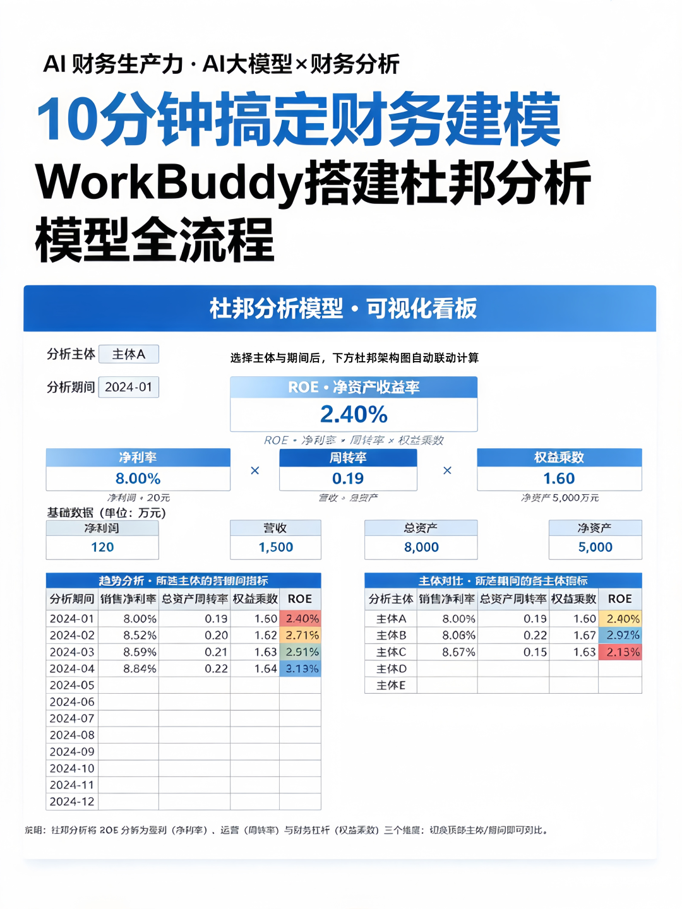
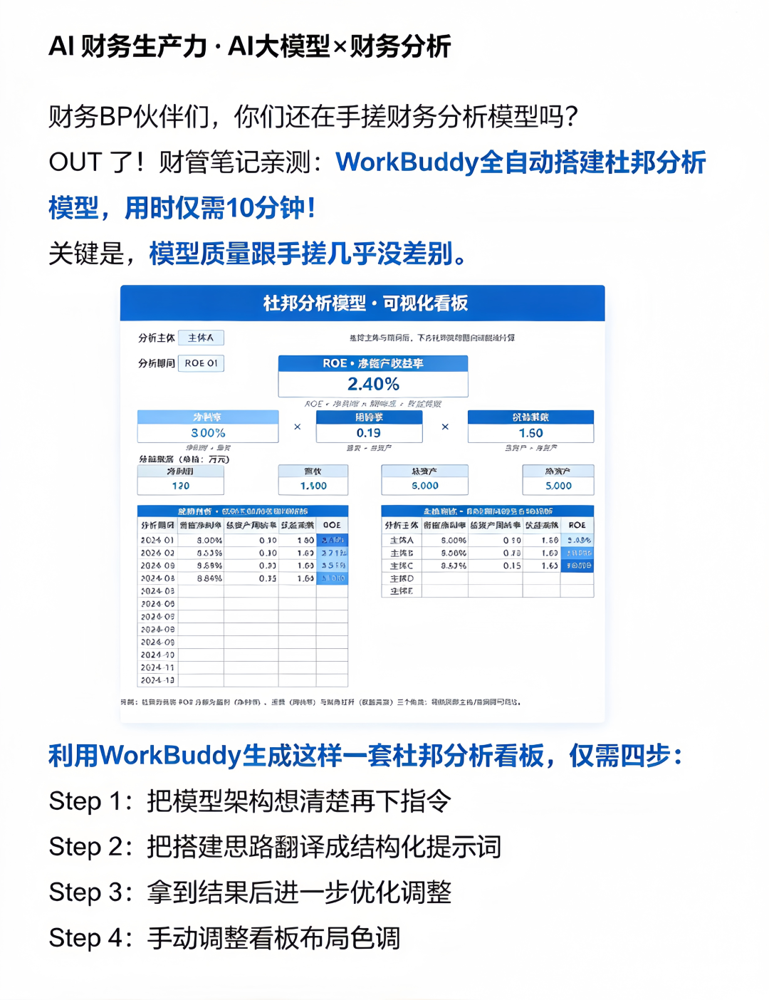
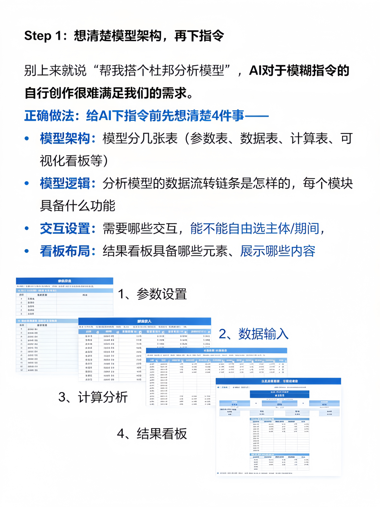
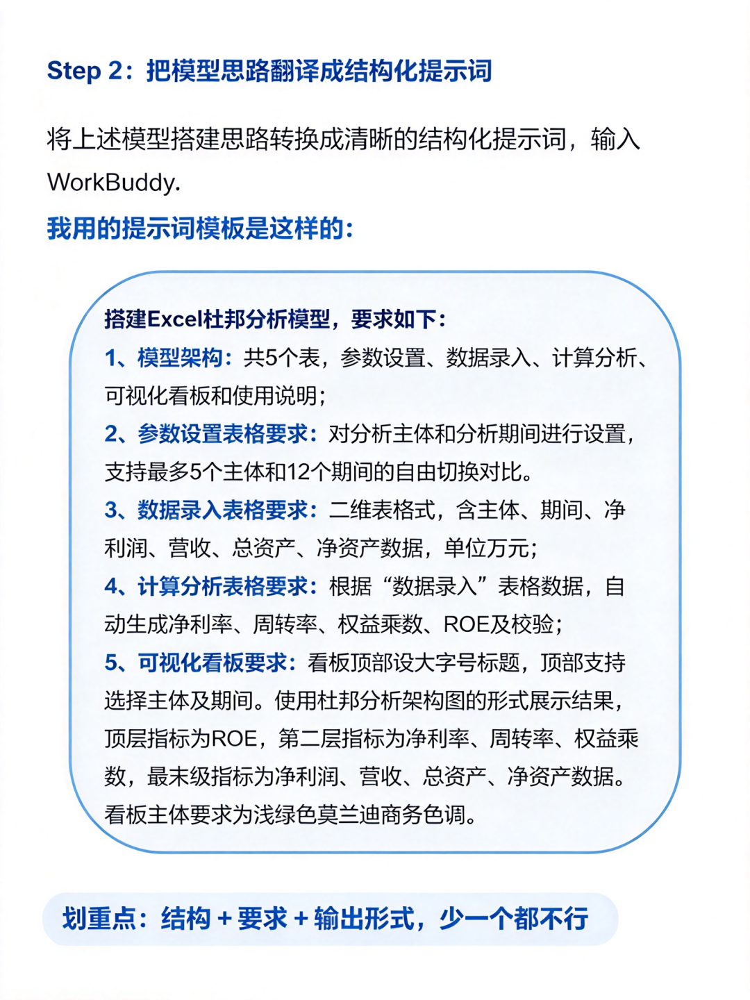
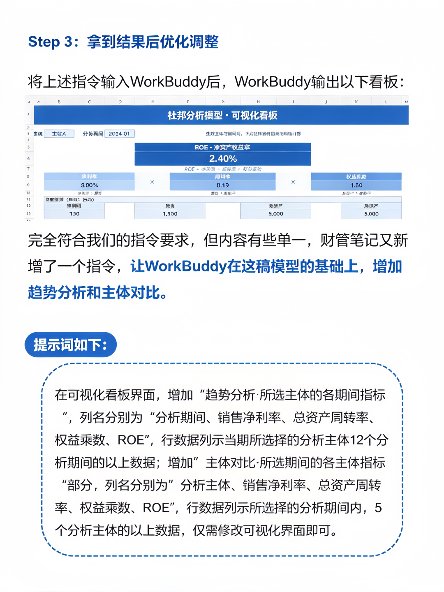
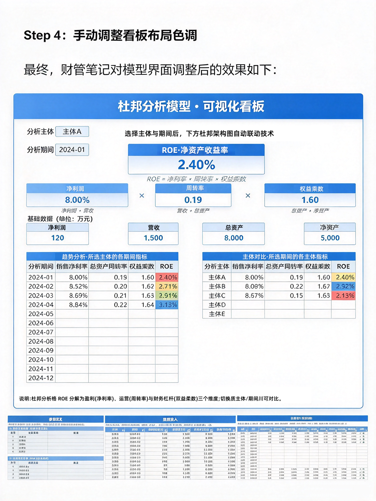

财务 BP 伙伴们，还在熬夜手搓杜邦分析模型吗？来看看这场实测对比！
同样做杜邦分析，一边是手动搭建、核对公式、调整联动，一不小心就出错，耗上大半天；另一边交给 WorkBuddy，输入原始财务数据，十分钟就能自动生成完整杜邦分析模型，拆解 ROE、定位驱动因素。
模型逻辑严谨，输出结果和手搓版本高度接近，省去重复搭表、调试公式的时间。当然 AI 不是直接替代，跑完之后我们再做业务校验、补充经营判断。 把机械搭建交给 WorkBuddy，财务人把时间留给业务洞察，不用再耗在繁琐的模型搭建上。





